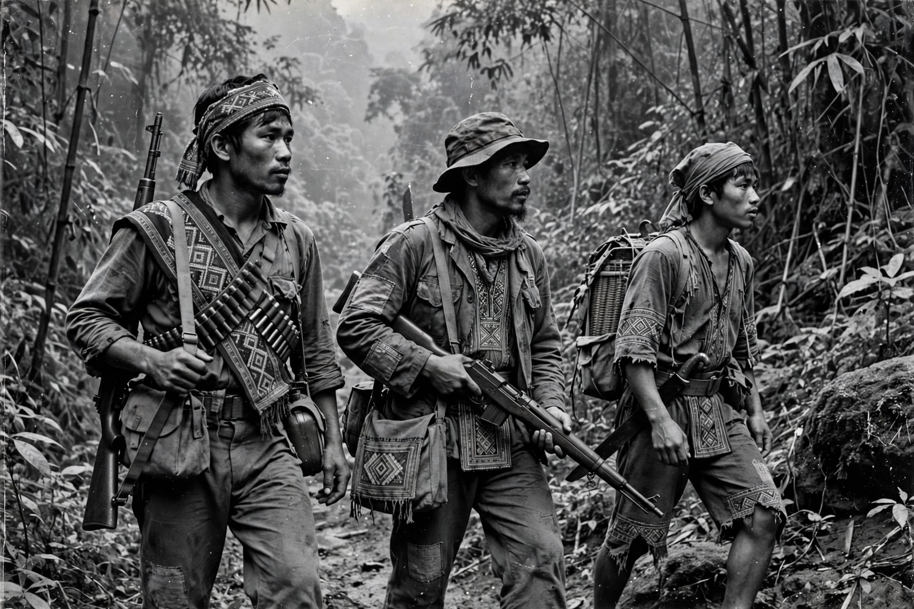

| Laotian Civil War | |
 The "Secret War" in Laos | |
| Date | 23 May 1959 – 2 December 1975 |
|---|---|
| Location | Kingdom of Laos |
| Result | Pathet Lao victory; Lao People's Democratic Republic established |
| Belligerents | Royal Lao Government (supported by the United States, Thailand, South Vietnam) vs. Pathet Lao (supported by North Vietnam, USSR, China) |
| Key figures | Kaysone Phomvihane; Souphanouvong; Vang Pao; Souvanna Phouma |
The Laotian Civil War was fought between the communist Pathet Lao and the Royal Lao Government from 1959 to 1975. It was closely intertwined with the Vietnam War: North Vietnam used eastern Laos for the Ho Chi Minh Trail, while the United States waged a covert "Secret War" in support of the royal government, including a massive bombing campaign. Laos became, per capita, the most heavily bombed country in history.
Laos gained independence from France in 1953–54, but the Pathet Lao movement, allied with the Viet Minh, retained control of two northern provinces. Attempts at a neutralist coalition government under Prince Souvanna Phouma repeatedly collapsed amid superpower rivalry, and by 1959 open fighting had resumed. A 1962 Geneva conference declared Laotian neutrality, but the agreement was soon violated by all sides.
The CIA recruited a clandestine army among the Hmong people under General Vang Pao, which fought North Vietnamese forces in the north-east, rescued downed American airmen, and guarded radar sites. Meanwhile the U.S. Air Force flew more than 580,000 bombing missions over Laos between 1964 and 1973, dropping over two million tons of ordnance, much of it cluster munitions that continue to kill and maim today. North Vietnam stationed tens of thousands of troops in Laos to protect its supply corridor to the south.
A 1973 ceasefire created a short-lived coalition, but as Saigon and Phnom Penh fell in April 1975 the Pathet Lao advanced and took power without a major battle for Vientiane. On 2 December 1975 King Savang Vatthana abdicated, the monarchy was abolished, and the Lao People's Democratic Republic was proclaimed under Kaysone Phomvihane. Tens of thousands of Hmong and other Lao fled to Thailand and were resettled abroad, many in the United States.